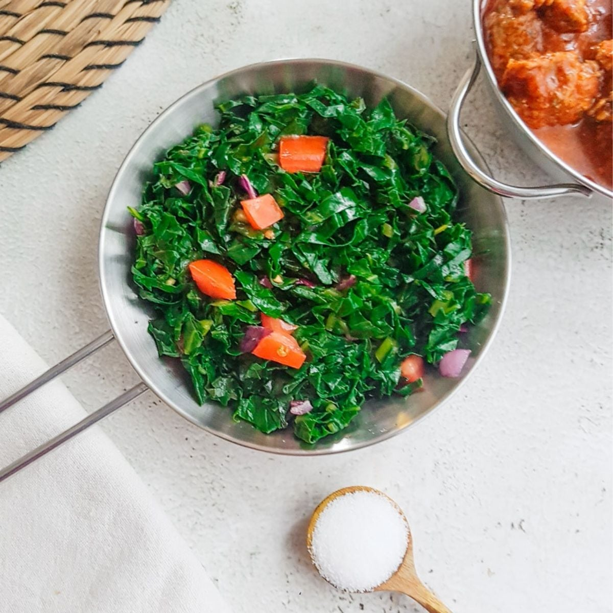

Home
Sukuma Recipe

Description
Ugali is a classic, hearty East African staple made of maize flour and water.
It is cooked into a firm, dough-like consistency and served hot alongside stews, meats, or
vegetables.
Ingredients
- Sukuma Wiki (collard greens) leaves
- Onions
- Tomatoes
- Cooking oil
- Salt
- (Optional)Spinach
Procedure
- In a heavy-based pot (locally called a sufuria), bring the water to a rolling boil over high heat. Add the butter/margarine if you are using it.
- Reduce the heat to medium. Slowly sprinkle in about 1 cup of the maize flour while continuously stirring with a sturdy wooden spoon or traditional cooking stick.
- Let the mixture bubble for 1 to 2 minutes, then gradually add the remaining flour while stirring. The mixture will begin to thicken quickly.
- Continue to stir and fold the mixture. Use your wooden spoon to press the ugali against the inner sides of the pot to crush any stubborn dry lumps. Keep folding it into itself until it forms a smooth, thick, dough-like ball.
- Once the ugali is firm, lower the heat as much as possible, cover the pot, and let it steam for about 3 to 5 minutes. This ensures the flour is fully cooked. Use the back of your wet spoon to press the ugali into a rounded dome shape.
- Remove from the heat. To serve, wet your serving plate and quickly flip the pot upside down over the plate so the ugali slides out in a clean, domed shape. Serve immediately while hot!